できること
打ちながら、回転率がすぐ分かる
台に出ている回転数と玉数を入れて「記録する」を押すだけです。
- 回転率・ボーダー・期待値・時給・総回転数を、入れるたびに計算し直します
- 使った玉数のほか、台の持ち玉数を入れて差で数えることもできます
- 大当たりのラウンド数と出玉も記録。1R出玉は実際の出玉から計算します
- 現金と持ち球を区間ごとに記録し、持ち玉比率も記録から計算します
回転率の推移をグラフで
1日の中で、回り方がどう変わったかがひと目で分かります。
- 回転率の推移を、平均とボーダーの線つきで確認
- ストロークを記録しておけば、ストローク別の回転率を比べられます
- 出玉と期待差玉の推移もグラフで確認できます
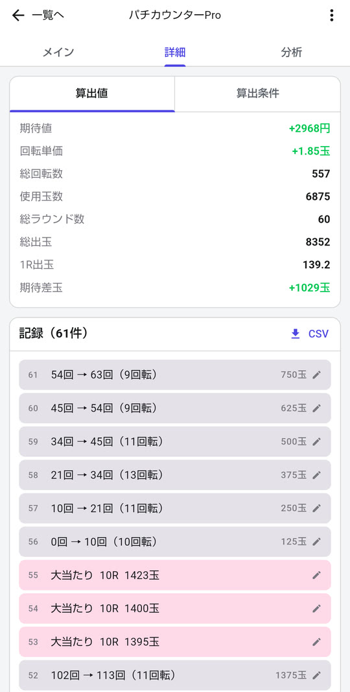
期待値・回転単価まで自動で計算
細かい数字は詳細のタブにまとめてあります。
- 期待値・回転単価・期待差玉などを自動で計算
- 打ち間違えた記録は、あとから1件ずつ直せます
- 記録を CSV で書き出せます
同じ台の過去の記録と合算
1日だけではぶれが大きい回転率も、日をまたいで見れば傾向が分かります。
- 同じ店・同じ台番の記録をまとめて、日をまたいだ回転率を表示
- 期待値やボーダーは、各日の設定・交換率で計算して合わせます
- 「当日＋直近3日」と「すべて」を切り替えられます
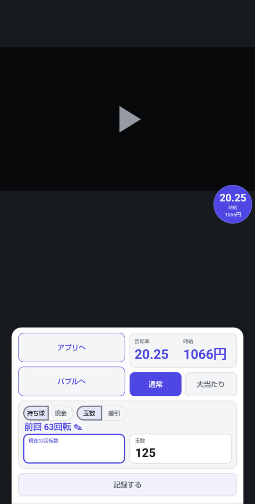
ほかのアプリの上から入力Android
画面の上に小さな窓（バブル）を出して、ほかのアプリを見ながら記録できます。
- バブルで入れた記録も、そのまま計算に入ります
- アプリに戻れば、いつもの画面で続きを記録できます
iPhone にはほかのアプリの上に重ねて表示する仕組みがないため、バブルは Android だけの機能です。
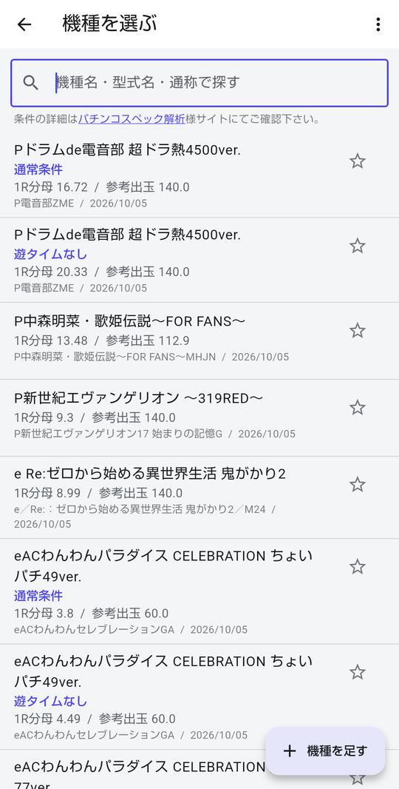
1,400件を超える機種データ
機種を選ぶだけで、1R分母と参考出玉が入ります。
- 機種名・型式名・通称で探せます
- お気に入りと、最近選んだ機種からすぐ呼び出せます
- 載っていない機種は、自分で登録できます
機種のスペックは「パチンコスペック解析」様に許可を頂き、公開値を利用しています。
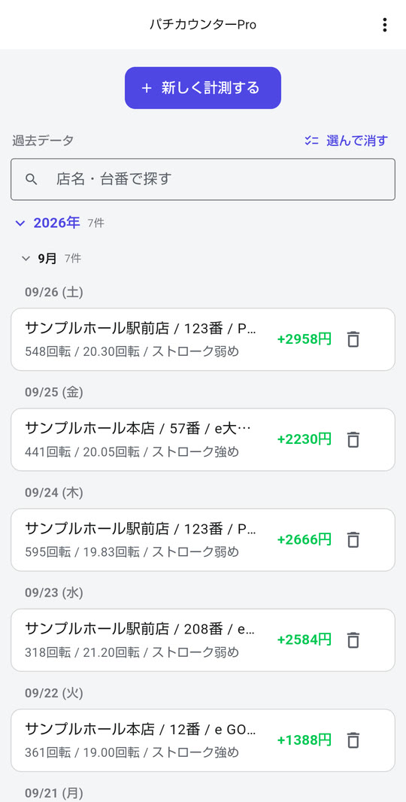
記録は日付ごとに一覧で
店・台番・機種・回転率・期待値がひと目で分かります。
- 店名・台番・機種名で絞り込めます
- 月・日付ごと、まとめて選んで消すこともできます
- 機種変更にそなえて、記録の控えを書き出し・読み込みできます
着せ替えは7種類
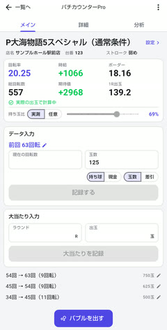
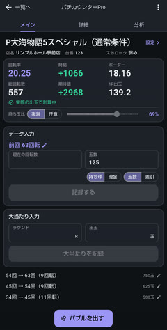
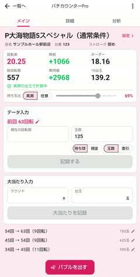
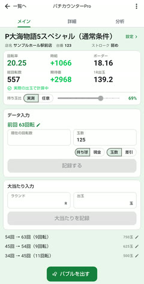
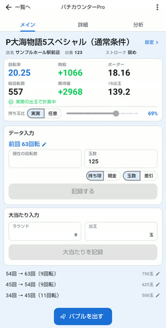
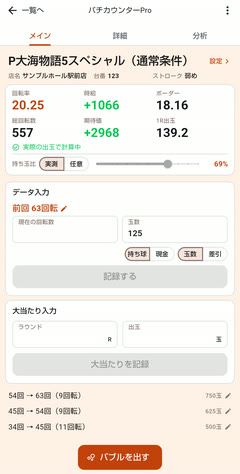
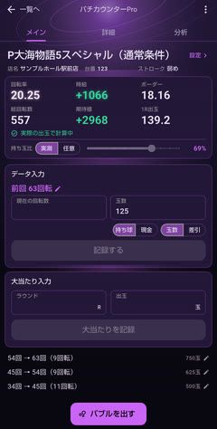
よくある質問
記録はどこに保存されますか
お使いの端末の中だけです。記録した内容を、開発者を含む外部へ送信することはありません。アカウントの登録も要りません。
機種変更のときは、どうすればよいですか
右上のメニューの「記録の書き出し／読み込み」で控えのファイルを書き出し、新しい端末の同じ画面で読み込んでください。計測中（バブルが出ているあいだ）は読み込めません。
料金はかかりますか
いまは無料で使えます。広告の表示もありません。将来、一部の機能を有料にする可能性があります。そのときも、それまでの記録が消えることはありません。
iPhone でもバブルは使えますか
使えません。バブルは Android だけの機能です（iPhone には、ほかのアプリの上に重ねて表示する仕組みがありません）。それ以外の機能は iPhone でも同じです。
表示される期待値やボーダーは正確ですか
目安です。機種のスペックはシミュレート値のため、実際とは差が出ることがあります。本アプリは遊技の結果を保証するものではなく、アプリの中でお金を賭ける機能もありません。
動作環境
- 対応
- Android 8.0 以上
iPhone（iOS 15 以上） - 料金
- 無料将来、一部の機能を有料にする可能性があります
- 広告
- なし
- アカウント
- 不要登録もログインもありません
- 記録の保存
- 端末の中だけ
- 提供
- HY Studio